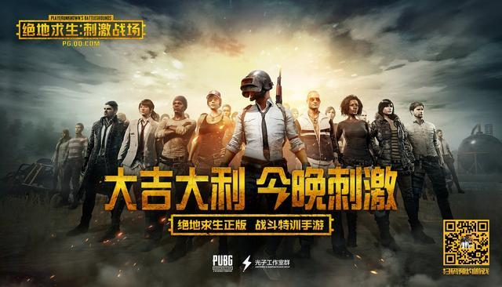

绝地求生(Playerunknown's Battlegrounds)，是Bluehole与《H1Z1》、《武装突袭3》“大逃杀”模式制作人Playerunknown合作的一款开放世界策略射击游戏，采用虚幻4引擎制作。
这款游戏是一款大逃杀类型的游戏，每一局游戏将有最多100名玩家参与，他们将被投放在绝地岛(battlegrounds)上，在游戏的开始时所有人都一无所有。玩家需要在岛上收集各种资源，在不断缩小的安全区域内对抗其他玩家，让自己生存到最后。游戏拥有很高的自由度，玩家可以体验飞机跳伞、开越野车、丛林射击、抢夺战利品等玩法，小心四周埋伏的敌人，尽可能成为最后1个存活的人。
2017年11月22日，腾讯游戏宣布获得《绝地求生大逃杀》在中国的独家代理运营权。2018年1月18日，由腾讯游戏频道主办的“2017中国游戏风云榜”颁奖盛典落幕，《绝地求生：大逃杀》获得十大最受关注客户端游戏。
腾讯也从蓝洞那里买到了版权，推出了两款手游。分别是绝地求生：全军出击和绝地求生：刺激战场
- 绝地求生：全军出击
- 绝地求生：刺激战场
《绝地求生：全军出击》是腾讯天美工作室携手PUBG公司双方确认将联合出品的《PUBG》正版手游。游戏已经在2018年2月9日正式上线！
《绝地求生：刺激战场》是由腾讯光子工作室群和PUBG联合开发的fps手游，于2018年2月9日在各大平台上线。[1] 2018年3月26日，《绝地求生：刺激战场》海外版登顶美国iPhone全品类免费App排行榜， 创国产手游出海最佳成绩。
